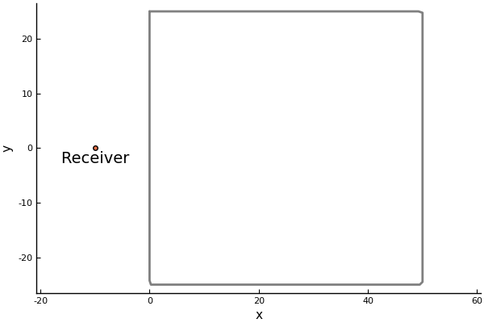
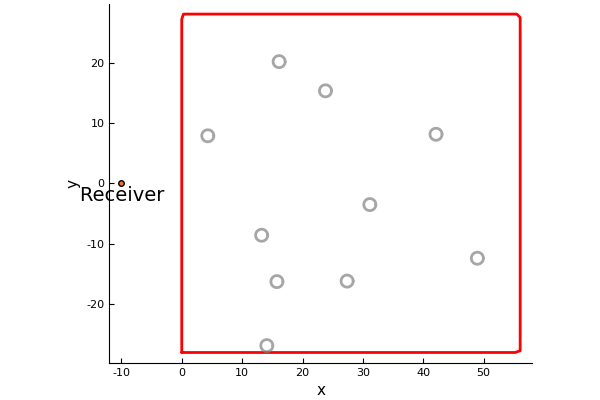

StatisticalMoments
Here we are going to simulate the scattered wave for many different configurations of particles. We can then take the average and standard deviation (the moments) of the scattered wave. In statistical mechanics this process is called ensemble average.
Region and particles properties
First we choose the region to place particles and the receiver position:
using MultipleScattering
bottomleft = [0.0;-25.0]
topright = [50.0;25.0]
shape = Box([bottomleft, topright])
x = [-10.0,0.0]using Plots
plot(shape);
scatter!([x[1]],[x[2]], label="");
plot_shape = annotate!([(x[1], x[2] -2., "Receiver")])
Next we fill this shape with a random (uniform distribution) configuration of particles:
volfrac = 0.05
radius = 1.0
particles = random_particles(Acoustic(2; ρ=0.0, c=0.0), Circle(radius);
region_shape = shape,
volume_fraction = volfrac,
seed=2
);
length(particles)
# output
40To see the position of the chosen particles:
plot(plot_shape)
plot!(particles);
plot!()
Scattering a plane-wave from these particles
ωs = LinRange(0.01,1.0,100)
plane_wave = plane_source(Acoustic(1.0, 1.0, 2);
direction = [1.0,0.0], position = x);plot(run(particles, plane_wave,x,ωs))
The moments of the scattered wave
Now we will do simulations for particles placed in many different configurations and take the moments:
results = map(1:20) do i
particles = random_particles(Acoustic(2; ρ=0.0, c=0.0), Circle(radius);
region_shape = shape,
volume_fraction = volfrac,
seed=i
)
run(FrequencySimulation(particles, plane_wave), x, ωs)
end
# package Plots changed it's argument, the below no longer works..
# num_moments = 3
# plot(results; field_apply = real, num_moments = num_moments)
# plot!(xlabel="wavenumbers", title="Moments of the real part")
Calculate the moments of the scattered wave in time
time_simulations = frequency_to_time.(results)
time_simulations[1].t # the time_arr chosen will be based on the discrete Fourier transform of simulations[1].k_arr
# real_time_moments = StatisticalMoments(time_simulations; response_apply=real) # moments of the real part
# plot(real_time_moments,xlims=(0,300));
# plot!(xlabel="time", title="Moments of the real part of the time wave")
References
A. L. Gower, R. M. Gower, J. Deakin, W. J. Parnell, I. D. Abrahams, Learning about random media from near-surface backscattering: using machine learning to measure particle size and concentration, arXiv preprint, (2018)1801.05490